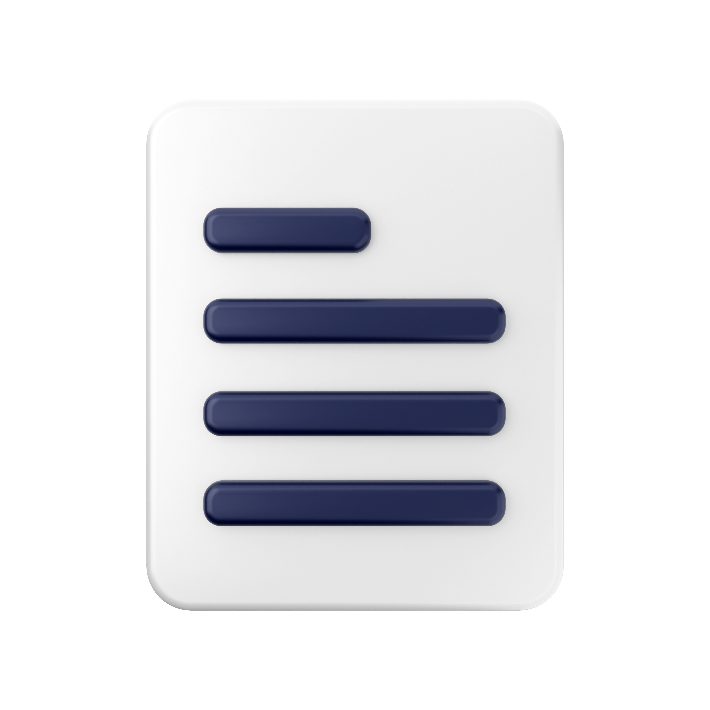

Master Your Typing Skills in 1 minute
We have large variety of test and practice sessions which you can perform to practice and test your typing skills. Based on your performance your report will be generated.
Practice
Features
Time Based Practice
You can quantify your skills in a certain interval of time by using timed practise and testing sessions.

Paragraph Based Practice
You can assess your typing abilities without any time constraints with a paragraph-based session.
Difficulty and Case Selection
There are several alternatives available to test your typing abilities based on the amount of difficulty you choose.